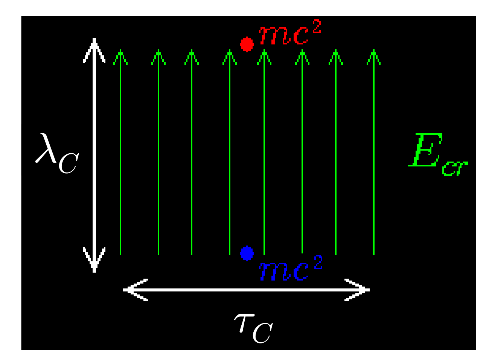

Вакуум в КЭД
Лагранжиан определяется 4 константами: $e$, $m$, $c$, $\hbar$, которые определяют характерные масштабы:
- Сила электромагнитного взаимодействия — постоянная тонкой структуры
$\alpha = e^2 / \hbar c \approx 1/137 \ll 1$
- Энергетический масштаб — масса покоя электрона
$mc^2 \approx 511\ \text{кэВ}$
- Пространственный масштаб — (приведённая) Комптоновская длина волны
$\bar{\lambda_C} = \hbar/mc \approx 3.86\times 10^{-11}\ \text{см}$
- Полевой масштаб — критическое поле Заутера-Швингера
$E_{cr} = {mc^2}/{e\bar{\lambda_C}}={m^2c^3}/{e\hbar} \approx 1.3\times10^{16}\ \text{В/м}$
Вакуум в КЭД
- Вакуумное состояние определяется как состояние с низшей энергией, при котором частицы и поля в среднем отсутствуют
-
В квантовом вакууме спонтанно появляются флуктуации в виде пар частица-античастица (электрон-позитрон), которые живут короткое время $\tau\sim\bar{\lambda_C}/c\approx 10^{-21}\ \text{с}$ и преодолевают за это время расстояние $\bar{\lambda_C}\approx 4\times 10^{-11}\ \text{см}$.
Вакуум в КЭД
- Физический смысл критического поля:
Критическое поле совершает работу равную $mc^2$ над электроном при его перемещении на $\bar{\lambda_C}$: $$|e|E_{cr}\bar{\lambda_C}\equiv mc^2$$
Такое поле способно "разделить" виртуальную электрон-позитронную пару на реальные электрон и позитрон — механизм Швингера, пробой вакуума.
-
В присутствии внешнего поля с напряжённостью порядка $E_{cr}$ КЭД переходит в режим сильного поля, характеризующийся существенным изменением свойств вакуума и появлении тесной связи между коллективными (плазменными) и квантовыми эффектами
